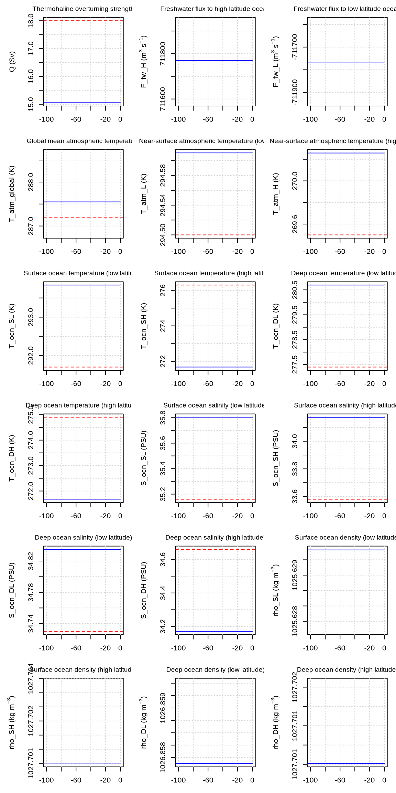
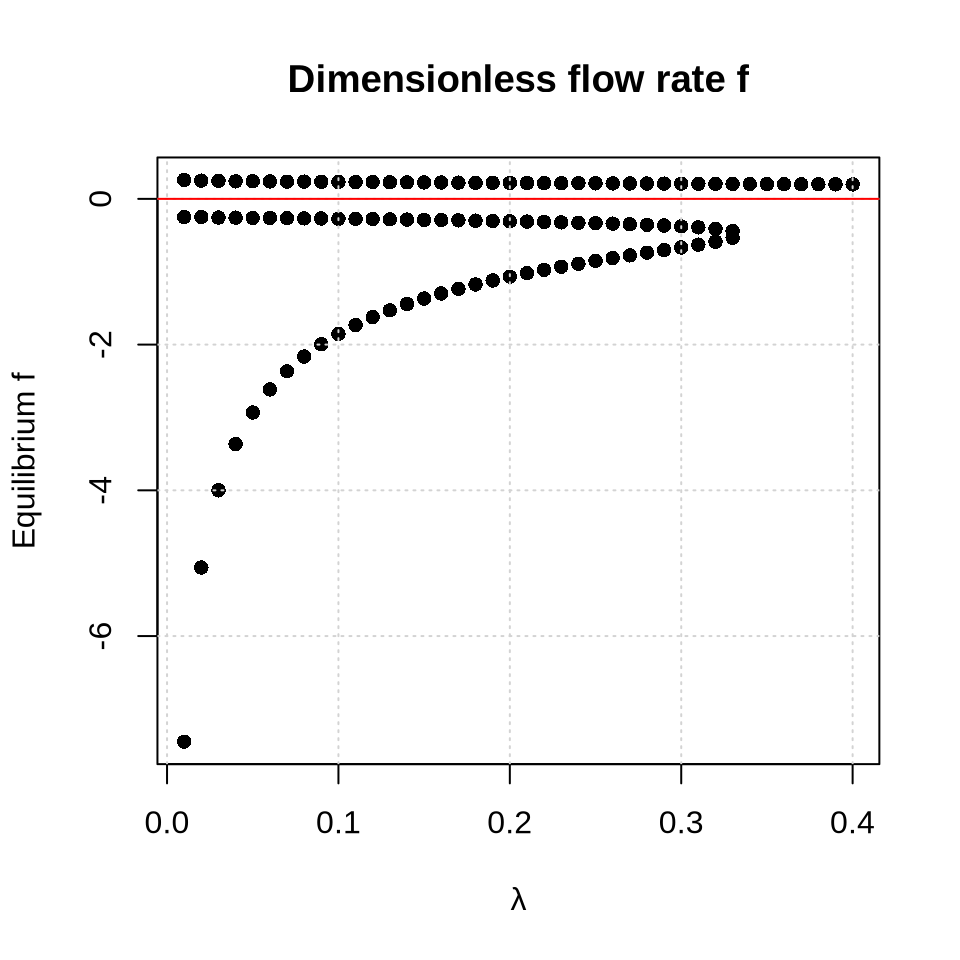
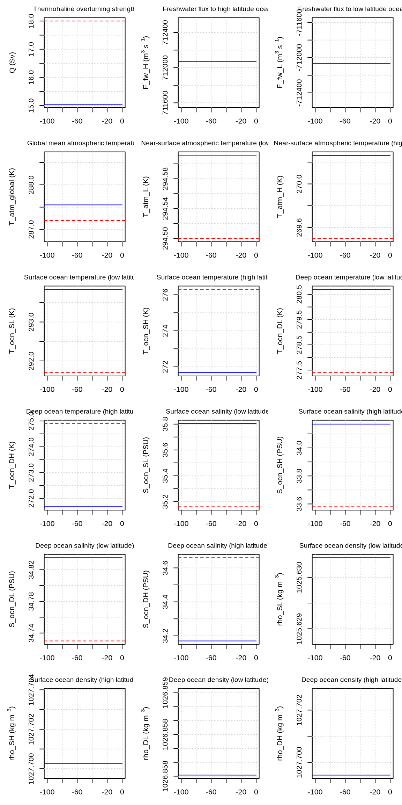

4 Week 4: Eigenanalysis
In this tutorial, we assess how different components of the climate system affect the local stability of the climate equilibrium state. To illustrate the method, we conduct an eigenanalysis under two different model configurations: one in which the atmosphere is dynamically coupled to the ocean (AO), and another in which the atmosphere, ocean, and sea ice (AOS) are all dynamically coupled. Comparing the results from both simulations show how sea ice affects the local stability.
4.1 Dynamic coupling of the atmosphere and ocean
We start with an experiment where we dynamically couple the atmosphere and the ocean, turning all other modules off. Let’s begin configuring our simulation.
rm(list = ls())
# Load the QUEST package:
library(quest)
# Set the path to the configuration files:
config.path <- file.path(getwd(), "run_quest/config")
# Load the configuration files:
config <- config_load(path = config.path)
# Set the flags to what we want
config$flags$run_AirSeaCarbon <- FALSE
config$flags$run_atmosphere <- TRUE
config$flags$run_ocean <- TRUE
config$flags$run_npzd <- FALSE
config$flags$run_land <- FALSE
config$flags$run_sic <- FALSE
config$flags$run_icesheets <- FALSE
config$flags$anthropogenic_emissions <- FALSE
config$flags$prescribed_CO2 <- FALSE
config$flags$prescribed_seaice <- FALSE
config$flags$diagnose_carbonates <- FALSENow we spin up the model for this model configuration for 10000 years. As usual, add this line into your curly brackets to avoid the many printouts: r, message = FALSE, warning = FALSE, results = FALSE
times <- seq(-10000, 0, by = 1)
output <- core_run_esm(config = config, times = times)
saveRDS(output, "output_W04_config_AO.rds")
# Create initialization file from this spinup
utils_write_new_init(
input_file = "output_W04_config_AO.rds",
output_file = "config_init_W04_config_AO.R",
final_year = TRUE
)Let’s have a look at some of the variables to see whether the model is spun up.
output <- readRDS("output_W04_config_AO.rds")
utils_plot(config, output, variables = c(
"Q", "F_fw_H", "F_fw_L",
"T_atm_global",
"T_atm_L", "T_atm_H",
"T_ocn_SL", "T_ocn_SH", "T_ocn_DL", "T_ocn_DH",
"S_ocn_SL", "S_ocn_SH", "S_ocn_DL", "S_ocn_DH",
"rho_SL", "rho_SH", "rho_DL", "rho_DH"
), my.xlim = c(-100, 0), PNGfile = FALSE)
Quiz Question 1: How can you tell that the model is in equilibrium?
Let us now find the equilibrium of this spun-up state by perturbing a set of state variables that are active in the current model configuration. To avoid printing many messages begin your code chunk with {r, message = FALSE, warning = FALSE, results = FALSE}:
# Get the spun up state variables
state_eq <- source("config_init_W04_config_AO.R")$value
# Select state variables that will be perturbed
select_variables <- c("T_atm_L", "T_atm_H", "T_ocn_SL", "T_ocn_SH", "T_ocn_DL", "T_ocn_DH")
# Find the equilibria
equilibria <- eval_equilibria(config, state_eq, select_variables = select_variables, n_starts = 100)
print(equilibria$physical)Quiz Question 2: What is the equilibrium value of the high-latitude atmospheric surface temperature (T_atm_H)?
Let us now find the dominant mode of this equilibrium using discrete time mapping with a time step of 50 years
stability_results <- eval_eigenvalues(config,
equilibria_dimensionless = equilibria$dimensionless,
state_eq = state_eq,
state_min_active = equilibria$state_min_active,
state_max_active = equilibria$state_max_active,
delta_time = 50
)
print(stability_results)As you can see, there is only one equilibrium. We will now have a close look at the results. Let’s begin by looking at the Jacobian.
4.1.1 Jacobian
To recall, the Jacobian is a matrix of partial derivatives:
\[ \mathbf{J} = \begin{bmatrix} \frac{\partial f_1}{\partial x} & \frac{\partial f_1}{\partial y} & \frac{\partial f_1}{\partial z} \\ \frac{\partial f_2}{\partial x} & \frac{\partial f_2}{\partial y} & \frac{\partial f_2}{\partial z} \\ \frac{\partial f_3}{\partial x} & \frac{\partial f_3}{\partial y} & \frac{\partial f_3}{\partial z} \end{bmatrix} \]
The Jacobian tells us how sensitive the tendency of each state variable is to perturbations in each of the state variables. For instance, the upper left corner says \(\frac{\partial f_1}{\partial x}\). In other words, we ask how does \(f_1\) change if we perturb \(x\). Now, recall that \(f_1 = \frac{dx}{dt}\). So really we are doing \(\frac{\partial}{\partial x} \left( \frac{dx}{dt} \right)\). So this first element shows how the tendency of \(x\) changes if we perturb \(x\). All the diagonal elements are about self-response (e.g. how does the \(y\) tendency change if I perturb \(y\)), while the off-diagonal elements are about cross-variable coupling (e.g. how does the \(x\) tendency change if I perturb \(y\)). In our case, all state variables are normalized, so the elements of the finite-time Jacobian can be interpreted as multipliers describing how a small perturbation is transmitted over the defined time interval. A value of 1 means that the response is equal in magnitude to the initial perturbation. A value greater than 1 means that the response is amplified, while a value smaller than 1 means that the response is reduced. For example, if a Jacobian element is 0.9, the response after the defined time interval is 90% of the initial perturbation, corresponding to a 10% reduction. A negative Jacobian element indicates an inverse or opposite-sign coupling over the defined time interval. The Jacobian elements show how strongly the variables are coupled. Let us discuss some examples:
If I perturb deep low-latitude ocean temperature (T_ocn_DL) then after a finite time step (in our case 50 years) that ocean temperature equals 0.957655542 times the initial perturbation
If I perturb T_ocn_DH then the T_ocn_DL tendency response the initial perturbation times 0.022543385
If I perturb T_ocn_DL then the T_ocn_DH tendency response the initial perturbation times 0.004857196
So the coupling from T_ocn_DH to T_ocn_DL is 4.6 times stronger compared to the opposite direction
Quiz Question 3: Why is the coupling stronger from T_ocn_DH to T_ocn_DL than vice versa?
Let us now continue with the eigenvalues
4.1.2 Eigenvalues
Quiz Question 4: Which of the eigenvalues is largest?
Quiz Question 5: What is the value of the largest eigenvalue?
Quiz Question 6: What does this eigenvalue tell you?
Quiz Question 7: What is the characteristic time scale of this mode?
Quiz Question 8: What does this time scale tell you?
Let us now continue with the eigenvector
4.1.3 Eigenvector
Quiz Question 9: Which mode is the dominant mode?
Quiz Question 10: Is the dominant mode the fastest or the slowest mode?
Quiz Question 11: Do the signs of the different variables vary in the dominant mode?
Quiz Question 12: What is the largest component of the dominant mode?
Let us now plot a phase diagram that shows the eigenvector. As a first step we need to randomly perturb the state variables in proximity of the equilibrium and run the model forward in time for each perturbation. In the code chunk below we do this for 20 perturbations, and for each perturbation we run the model for 1000 years. This calculation takes a little longer and we save the output as phase_portrait_AO_mode_1.rds (where AO stands for atmosphere-ocean).
v1 <- stability_results$equilibrium_1$eigenvectors[, "mode_1"]
results <- eval_eigenvector_perturbations(
v = v1,
state_eq = state_eq,
state_min_active = equilibria$state_min_active,
state_max_active = equilibria$state_max_active,
config = config,
n_perturb = 50,
epsilon = 0.02,
times = seq(0, 100, by = 1),
seed = 123
)
saveRDS(
results,
file = "phase_portrait_AO_mode_1.rds"
)Next we plot all the trajectories for different combination of variables. The figure shows how the state variables converge towards a straight line. This straight line is the eigenvector.
par(mfrow = c(1, 2), mar = c(5, 5, 1, 1))
eval_plot_eigenvector(
"phase_portrait_AO_mode_1.rds",
"T_ocn_SL",
"T_atm_L"
)
eval_plot_eigenvector(
"phase_portrait_AO_mode_1.rds",
"T_ocn_SH",
"T_atm_H"
)
You see that the trajectories converge onto a straight line. This straight line is the eigenvector. Once you are on this line, the ratio of both variables is constant.
4.2 Dynamic coupling of the atmosphere, ocean and sea ice
Let us now repeat the same exercise but using a different model configuration. In this case we will turn sea ice on and assess how this will affect the local resilience of the equilibrium.
rm(list = ls())
# Load the QUEST package:
library(quest)
# Set the path to the configuration files:
config.path <- file.path(getwd(), "run_quest/config")
# Load the configuration files:
config <- config_load(path = config.path)
# Set the flags to what we want
config$flags$run_AirSeaCarbon <- FALSE
config$flags$run_atmosphere <- TRUE
config$flags$run_ocean <- TRUE
config$flags$run_npzd <- FALSE
config$flags$run_land <- FALSE
config$flags$run_sic <- TRUE
config$flags$run_icesheets <- FALSE
config$flags$anthropogenic_emissions <- FALSE
config$flags$prescribed_CO2 <- FALSE
config$flags$prescribed_seaice <- FALSE
config$flags$diagnose_carbonates <- FALSENow we spin up the model for this model configuration for 1000 years. As usual, add this line into your curly brackets to avoid the many printouts: r, message = FALSE, warning = FALSE, results = FALSE
times <- seq(-10000, 0, by = 1)
output <- core_run_esm(config = config, times = times)
saveRDS(output, "output_W04_config_AOS.rds")
# Create initialization file from this spinup
utils_write_new_init(
input_file = "output_W04_config_AOS.rds",
output_file = "config_init_W04_config_AOS.R",
final_year = TRUE
)Let’s have a look at some of the variables to see whether the model is spun up.
output <- readRDS("output_W04_config_AOS.rds")
utils_plot(config, output, variables = c(
"Q", "F_fw_H", "F_fw_L",
"T_atm_global",
"T_atm_L", "T_atm_H",
"T_ocn_SL", "T_ocn_SH", "T_ocn_DL", "T_ocn_DH",
"S_ocn_SL", "S_ocn_SH", "S_ocn_DL", "S_ocn_DH",
"rho_SL", "rho_SH", "rho_DL", "rho_DH"
), my.xlim = c(-100, 0), PNGfile = FALSE)
Let us now find the equilibrium of this spun-up state by perturbing a set of state variables that are active in the current model configuration. Note that compared to the previous experiment, we now also include the state variable fractional sea ice cover (\(A_{sic}\)). To avoid printing many messages begin your code chunk with {r, message = FALSE, warning = FALSE, results = FALSE}:
# Get the spun up state variables
state_eq <- source("config_init_W04_config_AO.R")$value
# Select state variables that will be perturbed
select_variables <- c("T_atm_L", "T_atm_H", "T_ocn_SL", "T_ocn_SH", "T_ocn_DL", "T_ocn_DH", "A_sic")
# Find the equilibria
equilibria <- eval_equilibria(config, state_eq, select_variables = select_variables, n_starts = 100)
print(equilibria$physical)Quiz Question 13: What is the high-latitude atmospheric surface temperature (T_atm_H)?
Let us now calculate the Jacobian, eigenvalues, and eigenvectors using discrete time mapping with a time step of 50 years.
stability_results <- eval_eigenvalues(config,
equilibria_dimensionless = equilibria$dimensionless,
state_eq = state_eq,
state_min_active = equilibria$state_min_active,
state_max_active = equilibria$state_max_active,
delta_time = 50
)
print(stability_results)Again, there is only one equilibrium. Let us start by looking at the Jacobian and find out how the incorporation of dynamic sea ice affects ocean-atmosphere coupling.
Quiz Question 14: How does the high-latitude air temperature respond when perturbing high-lat surface ocean temperature?
Quiz Question 15: Does the dynamic coupling with sea ice enhance or reduce the ocean-atmosphere coupling in the high latitudes?
Quiz Question 16: Which of the eigenvalues is largest?
Quiz Question 17: What is the value of the largest eigenvalue?
Quiz Question 18: How does the dynamic sea ice coupling affect the largest eigenvalue?
Quiz Question 19: What is the characteristic time scale of this mode?
Quiz Question 20: How does the dynamic sea ice coupling affect the time scale?
Quiz Question 21: What are the two largest components of the dominate mode?